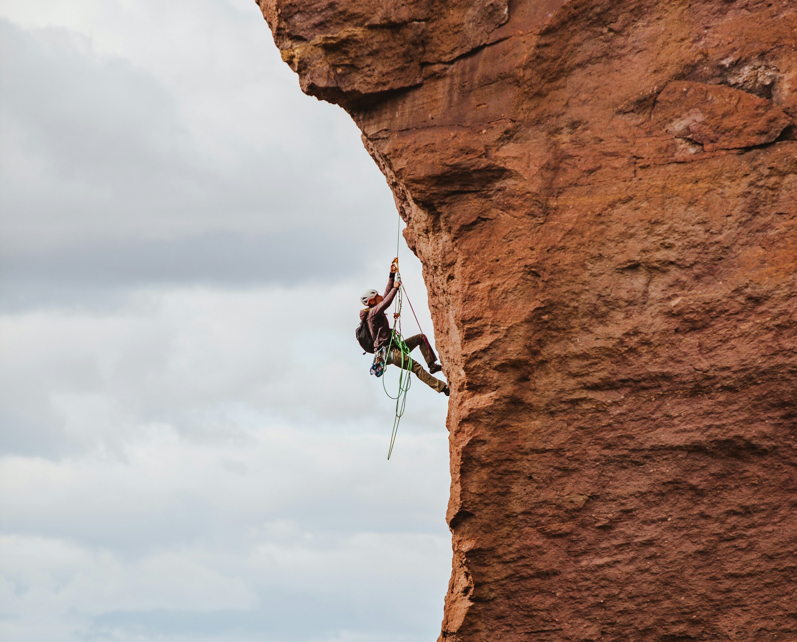
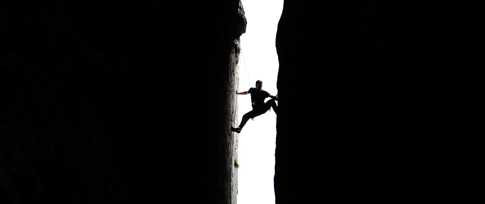
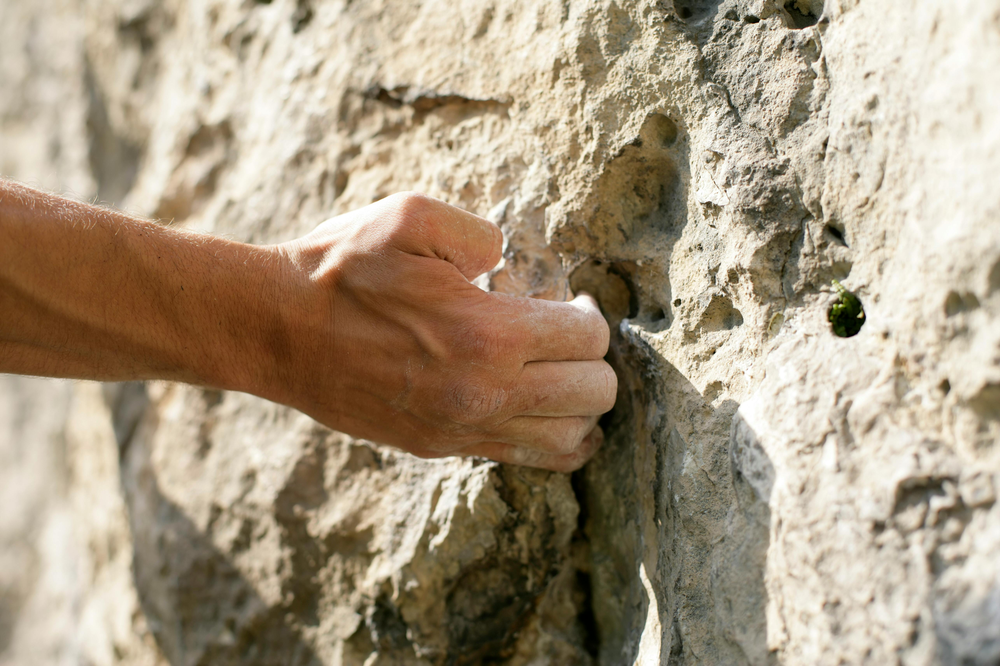

El panorama mundial de la máxima dificultad en escalada deportiva se sitúa actualmente en el 9c. No hace ni un par de semanas que Sean Bailey anunció la cuarta propuesta de este grado tras la primera ascensión de Duality of man, en Dry Canyon (aunque había realizado el encadenamiento casi un año antes). Esta línea se sumaba a las otras tres que ya existían, aunque ninguna de ellas ha sido repetida todavía y, por tanto, su grado no está confirmado aún.
Adam Ondra inauguró el grado en 2017 con Silence en Flatanger. Tuvieron que pasar cinco años para que otro escalador hablara del 9c y fue Seb Bouin, con DNA en las Gorges du Verdon. En 2023, Jakob Schubert se sumó al grupo después de resolver el proyecto B.I.G. en Flatanger. Y finalmente, Sean Bailey lo hizo a principios de 2025.
¿Quién será el próximo? Nadie lo sabe, pero las redes sociales van llenas de rumores acerca de proyectos de la máxima dificultad que podrían unirse a esa lista en cualquier momento. Repasamos a continuación algunos de ellos: Uno de los más emblemáticos es Le Blond, el último gran proyecto de Chris Sharma en Oliana. Se trata de una línea de más de cuarenta metros sobre un fuerte desplome, con pequeños agarres y un final explosivo. El californiano la concibió como homenaje a Patrick Edlinger y nunca ha descartado del todo la posibilidad de encadenarla.
En Buoux, Le Bombé Bleu, equipada en 1991 por Marc Le Ménéstrel, sigue resistiendo a generaciones de escaladores de élite. Aunque se especuló durante años con una dificultad extrema, algunos creen que hoy en día rondaría más bien el 9b. El joven Erwan Legrand, que incluso lo prueba descalzo, es uno de los más decididos a resolverlo. En Margalef, Café Colombia se ha convertido en la obsesión de Jorge Díaz-Rullo, que lleva cerca de cinco años trabajando el proyecto. A pesar de haber encadenado una variante más sencilla con Café solo 9b, la línea principal sigue sin caer, y el propio escalador reconoce que le ha dado importantes lecciones mentales.
En Arco aparecen varias serias candidatas. La más renombrada es una variante con una entrada más directa de la ya durísima Excalibur 9b+, podría llevar la dificultad a un nuevo nivel. Stefano Ghisolfi estima que el arranque añade una secuencia de 8B+ de bloque sin reposos, lo que ha hecho surgir rumores de un posible 9c+. En la misma zona, King Line, la prolongación de Queen Line 9b, fue descrita por Ghisolfi como mucho más dura que Perfecto Mundo y también podría andar por el 9c, pero el sector Laghel en que se encuentra fue cerrado a los escaladores.
Seb Bouin tiene en cartera varios proyectos extraordinariamente duros. Respecto a Insouciance (en Russan) ya ha dejado caer abiertamente la posibilidad de un 9c+ en sus redes sociales. Y en Flatanger intenta resolver Move integral, una unión entre Move 9b/+ y Thor's Hammer 9a+ de más de cien metros que podría situarse en el 9c.
Flatanger también acoge Kangaroo's Dyno, proyecto de Jules Marchaland, mientras que en Red River Gorge concentra dos grandes incógnitas: The Odyssey, una enorme pared desplomada equipada por Adam Taylor y elogiada por Seb Bouin, y Wonka vision, una combinación con un inicio de bloque extremo que enlaza con la clásica Pure imagination.
Mikel Linacisoro ha encadenado su vía más dura. El escalador guipuzcoano se ha anotado la repetición de Iñi Ameriketan 9a+ en Baltzola, una constatación más de que sigue creciendo en su escalada. En los últimos tiempos, coincidiendo con su periplo en Cataluña y sus entrenamientos en el CAR de Sant Cugat, ha cosechado buenos resultados en competición, como el título de Copa de España de Dificultad 2025 y sus encadenamientos más duros tanto en ensayado, a vista y al flash.
Para escalar su línea más dura, Mikel Linacisoro ha regresado a casa y se ha centrado en una vía clásica de la máxima dificultad. Iñi Ameriketan fue equipada en los inicios de la escalada en Baltzola (1995) por Iñigo Basterra, el primero en fijarse en la espectacular línea horizontal que discurría paralela a la célebre White zombie.
Después de años de olvido, Gotzon Gardeazabal se decidió a limpiarla para que las nuevas generaciones que empezaban a salir pudieran probarla, aunque nadie se animó hasta que Rikar Otegi se puso manos a la obra con ella y consiguió encadenarla en mayo de 2002, con propuesta de 9a.
"La escalada puede ser tan adictiva como la heroína, y a veces igual de peligrosa.
"Los viejos caminos tienen mucha experiencia."
"El alpinista es quién conduce su cuerpo allá dónde un día sus ojos lo soñaron."
"¿Por qué subir montañas- Porque están ahí."